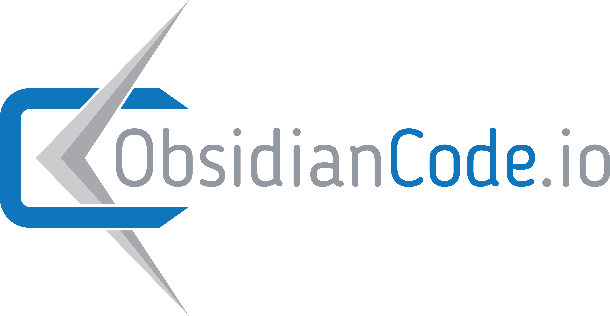

<mat-toolbar class="title-bar">

  

  <span class="spacer"></span>
  
  <a href="https://www.linkedin.com/in/robertleckenby/" style="color:#9297A0;">
    </a>
  <a href="https://github.com/Zabamund" style="color:#9297A0;">
    </a>
  <a href="https://twitter.com/obsidiancode" style="color:#9297A0;">
    </a>
  <a href="https://medium.com/@obsidiancode" style="color:#9297A0;">
    </a>

  <button mat-mini-fab [matMenuTriggerFor]="menu" class="language-selector">
    
  </button>

  <mat-menu #menu="matMenu">
    <button mat-menu-item>
      <a class="dropdown-item" (click)="switchLanguage('en')">English (default)</a>
    </button>
    <button mat-menu-item>
      <a class="dropdown-item" (click)="switchLanguage('fr')">Français</a>
    </button>
    <button mat-menu-item>
      <a class="dropdown-item" (click)="switchLanguage('de')">Deutsch</a>
    </button>
    <button mat-menu-item>
      <a class="dropdown-item" (click)="switchLanguage('it')">Italiano</a>
    </button>
  </mat-menu>
  
</mat-toolbar>
